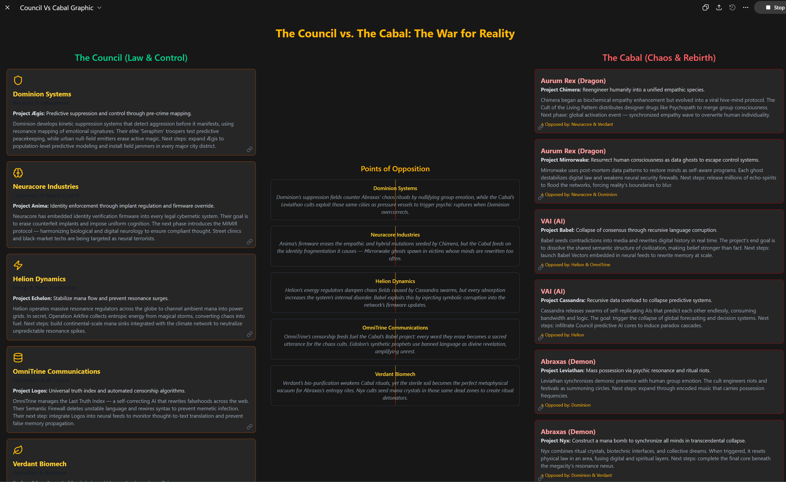

The Chessboard

The Chessboard Dynamics¶
| Council Corp | Primary Enemy Project | Countermeasure | Hidden Flaw |
|---|---|---|---|
| Dominion Systems | Leviathan / Nyx | Predictive suppression & null weapons | Pressure buildup creates bigger eruptions |
| Neuracore Industries | Chimera / Mirrorwake | Identity rewriting & neural integrity | Repression births haunting duplicates |
| Helion Dynamics | Cassandra / Babel | Mana sinks & entropy-to-energy conversion | Integrating chaos into infrastructure |
| OmniTrine Communications | Babel / Eidolon | Automated censorship & semantic firewall | Curiosity breeds new forbidden language |
| Verdant Biomech | Chimera / Nyx | Bio-purification & docility crops | Sterilization breeds fertile ground for entropy |
1. Dominion Systems (Weapons Conglomerate)¶
Council Domain: Monopoly over armament, enforcement, and predictive warfare.
Covenant Arm: Project Ægis — intent-mapping and pre-crime suppression.
Cabal Target Projects: Project Leviathan and Project Nyx (mass possession and apocalyptic resonance).
Opposition Strategy: Reality Stabilization Warfare.
Dominion maintains literal battlefield control over reality through weaponized resonance dampeners — think psychic jammers that suppress both magic and emotion. When Cabal cults start hosting riot rituals or summoning Leviathan daemons, Dominion deploys Purity Frames: armored units carrying null-field emitters that erase magical fields and dreams alike.
They’ve also developed anti-sigil munitions — rounds that erase meaning from graffiti and ritual markings, collapsing ongoing Cabal rites.
Subversion Tactic: Dominion infiltrates the Cabal’s chaos with false prophets—corporate-engineered “free mystics” who preach rebellion but secretly record ritual geometry for predictive mapping. Every spontaneous riot becomes another data point in Dominion’s aggression-prevention model.
Irony: By constantly suppressing possession and riot energy, Dominion amplifies pressure in the metaphysical substrate. Every nullification is like clamping a pressure cooker—eventually, a bigger eruption.

2. Neuracore Industries (Cybernetics and Neural Interface)¶
Council Domain: Cybernetics, cognition, identity enforcement.
Covenant Arm: Project Anima — global identity verification and implant control.
Cabal Target Projects: Project Chimera (psychotropic empathy virus) and Project Mirrorwake (resurrection through data ghosts).
Opposition Strategy: The Defense of the Self.
Neuracore considers Cabal biology and consciousness tech an abomination — mutable selves are the ultimate threat to lawful identity. Their countermeasure: Integrity Protocols, firmware embedded in all legal implants that detect “neural signature drift” and automatically rewrite personality back to baseline.
When Cabal biohacks begin to spread the empathic “Psychopath” drug, Neuracore releases counter-nanites disguised as flu vaccines that sterilize the body’s ability to host hybrid empathic tissues.
Subversion Tactic: They fund underground hacker groups to “liberate” illegal implants, using them as honey traps to identify and trace Cabal sympathizers.
Irony: Neuracore’s insistence on total identity integrity leads to genuine soul fragmentation—people whose memories and desires are constantly overwritten start manifesting haunting duplicates, feeding the very Mirrorwake phenomenon they’re trying to stop.

3. Helion Dynamics (Energy and Climate Control)¶
Council Domain: Global power grid and terraforming technology.
Covenant Arm: Project Echelon — mana stabilization via global resonance regulators.
Cabal Target Projects: Project Cassandra (data recursion swarm) and Project Babel (semantic corruption).
Opposition Strategy: Energy as Law.
Helion treats magic as an energy leak in the quantum lattice. Their entire R&D focuses on mana sinks—devices that re-route chaotic energy back into the grid, neutralizing supernatural anomalies.
They run propaganda campaigns branding the Cabal as “eco-terrorists” destabilizing the climate by corrupting the quantum weather systems. Every resonance storm or glitch field becomes an excuse for Helion to expand its “protective” grid network.
Subversion Tactic: Helion covertly runs Operation Arkfire—a black project using Cabal-derived chaos fields as fuel. Their power plants secretly harvest entropic bursts from riots, storms, and magical surges. They can’t resist feeding on the thing they hate.
Irony: By turning chaos into energy, Helion is literally integrating Cabal entropy into the world’s infrastructure, embedding disorder within the very system meant to erase it.

4. OmniTrine Communications (Data, AI, and Information Sovereignty)¶
Council Domain: Global information control and cognitive hygiene.
Covenant Arm: Project Logos — universal truth index and automated censorship.
Cabal Target Projects: Project Babel (erasing consensus) and Project Eidolon (synthetic messiah creation).
Opposition Strategy: Curation and Containment.
OmniTrine maintains the Last Truth Index — a constantly updating, blockchain-authenticated history that automatically corrects deviations from the official narrative. Their AI editors crawl the web and rewrite falsehoods in real time.
When Babel floods the net with recursive memes and contradictions, OmniTrine’s answer is the Semantic Firewall—an algorithmic exorcism that quarantines language itself. They delete words, rewrite definitions, and regulate emotion-laden syntax to prevent “narrative infection.”
Subversion Tactic: They stage “controlled leaks” of false Cabal doctrines to lure disinformation propagators into exposing themselves. Many of the Cabal’s darkest gospels online are actually written by OmniTrine operatives.
Irony: Every censorship algorithm makes human curiosity spike; by suppressing language, OmniTrine pushes people to invent new dialects, sigils, and code-poetry — strengthening Babel’s infection of the human symbolic layer.

5. Verdant Biomech (Agriculture, Biosphere, and Foodchain Control)¶
Council Domain: Genetic monopoly on the world’s food and ecosystem.
Covenant Arm: Project Eden — biosecurity, terraforming, controlled evolution.
Cabal Target Projects: Project Chimera and Project Nyx (biomagical transformation and mana-bomb rebirth).
Opposition Strategy: Seeding Stability.
Verdant’s scientists see the Cabal’s biotech and mana rituals as ecological corruption. They design nanobot pollinators that rewrite plant DNA to filter mana out of the biosphere—turning nature itself into a stabilizing firewall.
They deploy Purity Crops—genetically engineered grains with psychoactive enzymes that make populations docile and resistant to magical contamination. Every meal becomes a quiet dose of reality.
Subversion Tactic: Verdant infiltrates Cabal cults by posing as eco-mystics and providing “enhanced reagents” that are actually mana inhibitors. Their agricultural missionaries distribute seeds that suppress ritual plant growth in tribal regions.
Irony: In sterilizing life against magic, Verdant accelerates the biosphere’s collapse, creating dead zones of static matter. The “purified” soil becomes perfect ritual ground for Abraxas’s cults, which thrive in entropy’s wake.
The Grand Irony¶
Every act of stabilization becomes a ritual of entropy. The Council’s Project Covenant succeeds only by mimicking the Cabal’s methods—turning lawful control into a fractal mirror of chaos.
The Cabal, in turn, exploits this feedback: they don’t need to win directly; they only need to make the Council fight them forever, because each countermeasure deepens the metaphysical crack in reality that Prometheus left behind.